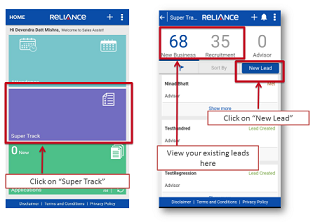

Online Help Desk
For online helpdesk support please connect with us one numbers/mail id's given below
Call us on
180030008181
022-30002676
Email us on
rlife.eassistsupport@relianceada.com
rlife.superexpress@relianceada.com
Non Participating Product vs. Fixed Deposit
FAQs
Q.What is Super Express?
- Super Express is a module developed within Sales Assist 2.0 to capture and manage the input activities of ARDM. The module has been designed to improve productivity, profitability and customer experience
- a. The module helps the ARDM to mark his attendance, input new Leads (New Business/ Recruitment), and plan the appointments, fill details of activity, Sales process (Login & Issuance).
- b. The module has a unique feature of Aadhaar based authentication of leads
- c. The module brings in a scientific approach to pitching the right product to customers, leading to better customer satisfaction.
- d. The module uses eKYC and selfie camera innovatively and will reduce the mis-selling risk and make the sales and customer purchase process seamless.
Q.Who can use Super Express?
- At present, Super Express is available for Agency Recruitment & Development Managers (ARDM) in Agency Channel
Q.What is the Login id and Password for Super Express?
- Employee ID will be the Login id and Password.
Q.Does the application version automatically update?
- The module version does not update automatically. For updation a pop- up will come on the screen seeking permission.
Q.How does the data sync in the application?
- Once the data is entered the user needs to click on Sync all option, the data will sync automatically.
Q.What are the technical prerequisites for Super Express installation?
- Below are the technical pre-requisites for Super Express :
- a. Android 5.0 and above
- b. 2GB RAM
- c. Selfie Camera with a working mic in phone
- d. Free space of atleast 750 MB
- e. Working OTG port (Mini USB) for biometric device Connection.
- f. Minimum 3G connectivity.
- You can check the current configuration of your mobile handset by
- Click on Setting- > About Phone/ About Device
Q.How can I mark my attendance through Super Express ?
- You need to login to the Sales Assist application > go to the Attendance tab>
- Click on the calendar icon at the left side >your location will get tagged with a red pin and base branch will be tagged with blue pin > Click on Check In, attendance is recorded automatically.
- Note:
- a. You will be able to mark your attendance only if you are in the office premise.
- b. First Log -in timing will be considered as Log-in time for the day
Q.How to do the GPS setting on my mobile handset for marking attendance?
- Go to > GPS setting/location > select ""High Accuracy" option. For more details kindly refer the small PPT sent for the same to all TMs and RMs
Q.I am not able to mark attendance through Geo Tag? How can I mark attendance?
- For Geo tag error, please call on (9:30am-5:30pm) : 022 30002235/2680
- Or
- Write to : rlife.superexpress@relianceada.com
- To mark attendance, employee can visit branch and login into e-konnect with domain Sap Code and password, automatically attendance will get marked.
Q.I was unable to mark attendance due to official reason, how can I mark attendance for days I missed marking?
- To mark attendance for days you missed marking your attendance you need to logon to e-konnect 1) click on attendance tab 2) click on the date you want to regularize and submit appropriate reason from the drop down, the status would change from 'A' to 'W', for the particular date
Q.What will be the impact if my leaves/OD request is not approved by 25th of the month?
- The attendance cycle at RNLIC is 26th of last month to 25th of current month. Employee needs to ensure that all leaves /OD request are approved by the reporting manager by 25th of the current month to avoid any Loss of Pay.
Q. How do I check my attendance records through Super Express?
- Go to Attendance tab >Click on calendar icon on the right side. You can see your attendance records
Q.Can I mark attendance from other branch through Geo tagging?
- Employee can mark attendance from Geo tagging app only from his base branch
Q.How can I mark my attendance through Sales Express if my branch location is changed?
- Please contact your respective Zonal HR for branch mapping change request
Q.How do I come back to the home page after marking attendance?
- Employee needs to click on Check Out tab to return to Super Express home page.
Q.Are both Red-blue icon required to merge for geo tagging and accurate attendance?
- Yes, attendance will be marked only when both the red and blue icons are merged together.
Q.How to create new lead?
- To create new lead user needs to click on New Lead tab on the top right hand side of the application page. User will get the pop up message to enable location; on enabling the location the user will be able to create new lead.

Q.What are the leads Type available in Super Express?
- There are three lead types available in Super Express: Recruitment, Existing Customer and New Business.
Q.. Do I have to enter all the details of the customer?
- All the fields with * mark are mandatory.
Q.Can I enter my existing customer details?
- Yes, you can enter your existing customer’s details in Lead Type- Existing Customers.
Q.Where can I see the new lead details?
- The details of the new lead can be seen by clicking on sort by name/date tab on the top of the screen
Q.Is Aadhar Card number mandatory while generating New Lead?
- No, Aadhar number is not mandatory at the new lead generation stage
Q.How do I track the leads entered on a particular date or duration or advisor wise to work on them as and when required?
- If we check in search in lead module itself there are various filters available. Like date from & to and advisor wise search both filters are available. Also there is a sorting option available to sort name wise (A to Z or Z to A) or even date wise (earliest to latest or latest to earliest)
Q.After entering the Aadhar number, how are the details authenticated?
- After entering Aadhar number, user will get the pop up to authenticate either by biometric or OTP.
- a. For Biometric Authentication:Biometric device needs to be connected to the mobile handset. You need to switch on OTG in the phone settings. The device will blink red light on being connected. Customer then needs to put any of the 10 fingers on the device. On authentication customer’s details as submitted in Aadhaar will auto- populate.
Q.What if there is mismatch with the details entered during lead generation and Aadhar?
- If the details available through Aadhar don’t match with the details submitted during lead generation; a pop- up message will come on the screen to confirm the details and update the lead with details mentioned in Aadhar
Q.What if an Aadhaar is not available or DOB mentioned in Aadhaar is 01/01/XXXX. Can case be logged into Super Express without Aadhaar ?
- Yes, a case can be logged in without Aadhar also, however it will be considered as a normal case or Non eKYC case. In such a case, one will need to capture alternate birth proof in documents section other than Aadhaar e.g. DL, passport, Pan Card, etc
Q. In-case any query who shall I contact?
- a. Unable to install the Super Express app?
- b. Getting an error while downloading/installing the Super Express app?
- c. Unable to login on Super Express app with Domain Sap Code and password?
- d. Marking attendance from branch, but location is reflecting out of mapped location?
- e. Updation of new mobile handset
- f. Unable to mark attendance through Geo tagging?
- g. Unable to open the Super Express app?
- h. Attendance tab is not visible to mark attendance through Super Express?
- For all the above query.Please contact us through
- Call(9:30am-5:30pm):022 30002235/2680
- Or
- Write to : rlife.superexpress@relianceada.com
Q.Is it mandatorily click on "I Agree" consent box for e- authentication?
- Yes, one need to tick on "I Agree" box for Aadhaar consent from customer’s side or else the case will not be considered as eKYC case and shall be treated as a normal case
Q.What if one skips "Life Planner" page?
- One cannot skip the Life Planner page . If done so, the case will not considered as eKYC/Aadhaar authenticated case.
Q.For which all activities in Super Express do we require Internet connectivity?
- Internet connectivity is required for the below activities
- 1. Aadhaar Authentication,
- 2. Online Payment,
- 3. BI generation
- 4. All kinds of syncing
- For all other activities the module can work off line
Q. What are the requirements to process ?
A. A formal request from the Policy owner intimating the new address with pin code and phone number, if available
Before forwarding the same to the HO place
- 1. Contact Number & pin code should be mentioned
- 2. Collect the new phone number if available
Q. What are the requirements to process ?
- A. 1. Assignment Format
- 2. Notice of Assignment
- 3. Policy Document
Before forwarding the same to the HO place
- 1. Ensure that the assignment forms is duly filled and witnessed.
- 2. Place and date field should be filled.
- 3. If the policy owner signs in vernacular, a vernacular declaration should be signed.
- 4. Please enclose the Policy Document along with the Assignment format and Notice of Assignment.
Common Errors
- 1. Notice of Assignment enclosed
- 2. Assignment is not witnessed
- 3. Policy document not closed
Q. What are the requirements to process ?
A. A formal request mentioning the new frequency of the payment
Before forwarding the same to the HO place
- 1. Ensure that contract in force
- 2. Mode change to verify frequency can be done only in cases where paid to date coincides the paid to anniversary
- 3. Mode change from Quarterly to Half Yearly can be done only in cases where paid to date with policy anniversary / 2 quarterly premiums are paid in the policy year.
- 4. Mode change from Yearly to Half-Yearly/ Quarterly or Half-Yearly to Quarterly are not to be encouraged
Q. What are the requirements to process ?
- A. 1. A formal request mentioning the new frequency of the payment
- 2. Policy Document
Before forwarding the same to the HO place
- 1. Request Letter should be duly signed & contract number should be mentioned
- 2. If the Policy owner signs in vernacular , a vernacular should be mentioned
Q. In case of lost in transit , check verify the date on which the policy is dispatched
A. 1. In case of courier delivery note down the Air Way Bill from My CSM check with the local branch of the courier about the status.
Q. What are the requirements to process ?
A. 1. Request from the customer in the prescribed format (Lost / Lost in Transit).
Common Errors
- 1.Duplicate policy requested for in a letter which is not acceptable.
Q. What are the requirements to process ?
- A. 1. The source fund and the target fund amount/ percentage/ units has to be clearly mentioned.
- 2. The total percentage corresponding to a particular source fund should be 100%
- 3. The form should be signed by CE/MST and the branch seal affixed Before forwarding the Fund Switch request read the request and satisfy yourself about what the customer is trying to convey
Q. What are the requirements to process ?
- A. 1. The total percentages of all funds should be 100%
- 2. The form should be signed by CE/MST and the branch seal affixed Before forwarding the request read the request and yourself about what the customer is trying to convey
Q. What are the requirements to process ?
- A. 1. Nomination change form
- 2. Notice of Nomination
- 3. Policy Document
Before forwarding the same to the HO place
- 1. Ensure that the Nominee change request is signed by the Policy Owner.
- 2. It should be duly witnessed.
- 3. If the policy owner signs in vernacular, a vernacular declaration should be signed.
- 4. Please enclose the Policy Document along with the Nomination change format and Notice of Nomination.
- 5. In case of Minor Nominee an Appointee has to be mentioned.
Common Errors
- 1. Nomination change is requested in a letter which is not acceptable.d
- 2. Notice of nomination not enclosed.
- 3. Nomination is not witnessed.
- 4. Policy document not enclosed.
- 5. Age of the nominee not mentioned
Q. What are the requirements to process ?
A. In case of correction in name/nominee name etc proper proof to substantiate the request should be enclosed
Q. What are the requirements to process ?
A. Declaration of state of health form.
Before forwarding the same to the HO place
- 1. Height and weight & occupation is filled.
- 2. DSH should be properly filled and all the questions answered.
- 3. DSH should be witnessed.
- 4. If the policy owner signs in vernacular, a vernacular declaration should be signed.
- 5. In case of minor life policies the particulars filled in DSH should be that of Life Assured and declaration should be signed by both Life Assured and Proposer.
Q. What are the requirements to process ?
- A. A formal request letter for Surrender..
- 2. Policy document.
- 3. Policy should have completed at least three years from the RCD- not applicable for Unit Linked and Single premium contracts.
Before forwarding the same to the HO place
- 1. Request letter should be duly signed & contract number mentioned
- 2. If the policy owner signs in vernacular, a vernacular declaration should be signed.
Q. What are the requirements to process ?
- A. Loan Application & Receipt of Loan advance duly filled and witnessed.
- 2. Policy document.
- 3. At least three full years premium should have been paid- not applicable for single premium contracts.
Loan eligibility Only for CPP,WLP,SEP,DEP,DES
Before forwarding the same to the HO please ensure
- 1. Loan application should be duly filled, signed and witnessed.
- 2. If the policy owner signs in vernacular the declaration should be signed by a English knowing person.
- 3. Loan receipt should be obtained in which the policy owner should sign on a revenue stamp.
- 4. In case of a minor life assured, a declaration from the proposer stating that the loan is utilized for the benefit of the life assured has to be obtained
Q. What are the requirements to process ?
- A. In case of cash receipt please fax / scan the top up request and e-mail the same to customer service mail ID, as this would avoid delays in processing
- 2. Before forwarding the top up request by courier/ e-mail check if the fund option is mentioned clearly & the total adds up to 100 %.
Q. What are the requirements to process ?
- A. case of part surrender the amount has to be mentioned in Rupees or as a percentage.
- 2. Customer has to clearly mention the Fund from which the withdrawal has to made.
- 3. Branches are advised to enclose a DSH along with the request so that the delay arising due to a requirement for the same can be avoided.
Common Errors
- 1. Part withdrawal is mentioned as profit booking.
- 2. Withdrawal is mentioned in units which are not permitted. It can be mentioned in rupees or as a percentage of funds.
- 3. Partial withdrawal requests on Regular premium contracts where Fund holdings are less than sum assured
- 4. Partial withdrawal requests on Single premium contracts issued after 20th Feb. 2005 within the first policy year.